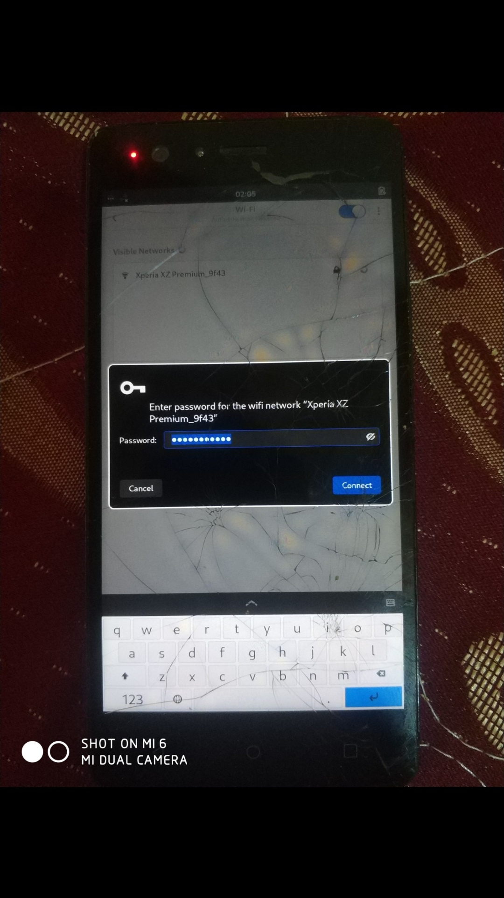

BQ Aquaris M5 (bq-piccolo)
|
 BQ Aquaris M5 running Phosh on postmarketOS mainline | |
| Manufacturer | BQ |
|---|---|
| Name | Aquaris M5 |
| Codename | bq-piccolo |
| Released | 2015 |
| Category | testing |
| Original software | Android 5.1.1 (Lollipop), upgradable to 7.0 (Nougat) |
| postmarketOS kernel | Mainline |
| Hardware | |
| Chipset | Qualcomm MSM8939 Snapdragon 615 (28 nm) |
| CPU | Octa-core (4x1.5 GHz Cortex-A53 & 4x1.0 GHz Cortex-A53) |
| GPU | Adreno 405 |
| Display | 1080 x 1920 (IPS LCD capacitive touchscreen, 16M colors) |
| Storage | 16GB / 32GB |
| Memory | 2GB / 3GB |
| Architecture | aarch64 |
{kind=link}
| USB Networking |
Works
|
|---|---|
| Flashing |
Works
|
| Touchscreen |
Works
|
| Display |
Works
|
| WiFi |
Works
|
| FDE | |
| Mainline |
Works
|
| Battery | |
| 3D Acceleration |
Partial
|
| Audio | |
| Bluetooth |
Works
|
| Camera | |
| GPS | |
| Mobile data | |
| SMS | |
| Calls | |
| USB OTG | |
| NFC | |
| Accelerometer |
Works
|
|---|---|
| Magnetometer | |
| Ambient Light | |
| Proximity | |
| Hall Effect | |
| Ir TX | |
|---|---|
| TrustZone | |
|
This device is based on Snapdragon 615. See the SoC page for common tips, guides and troubleshooting steps |
Contributors
Maintainer(s)
Users owning this device
What works
- Buttons
- WiFi/Bluetooth
- SD Card slot
- Touch (
atmel_mxt_ts) - Magnetometer (
ak09911) - Proximity Sensor (
ltr559) - Vibrator
- Accelerometer/Gyroscope (
bmi160)
hwtest:
| Category | Model | Path | Status |
|---|---|---|---|
| framebuffer | msm | /sys/class/graphics/fb0 | working |
| drm | - | /sys/class/drm/card0-DSI-1 | working |
| magnetometer | ak09911 | /sys/bus/iio/devices/iio:device3 | working |
| accelerometer | bmi160 | /sys/bus/iio/devices/iio:device2 | working |
| gyroscope | bmi160 | /sys/bus/iio/devices/iio:device2 | working |
| proximity | ltr559 | /sys/bus/iio/devices/iio:device1 | working |
| input | Atmel maXTouch Touchscreen | /dev/input/event5 | working |
| input | GPIO Buttons | /dev/input/event3 | working |
| input | GPIO Hall Effect Sensor | /dev/input/event2 | working |
| input | pm8941_resin | /dev/input/event1 | working |
| input | pm8941_pwrkey | /dev/input/event0 | working |
What does NOT work
- WiFi/Bluetooth doesn't come up all the time.
How to enter flash mode
BQ bootloader
- Recovery: Power on the device with both Power and Volume Up buttons.
- Fastboot: Power on the device with both Power and Volume Down buttons
Installation
Unlock bootloader
To unlock your bootloader boot into Android, enable Developer Options from the settings and enable "Allow OEM unlock". Then boot into Fastboot and use fastboot oem unlock. You might need to use fastboot oem unlock-go. (Note: All your data will be erased!)
Firmware
It is recommended to flash to latest firmware from BQ before using postmarketos.
postmarketOS
The mainline kernel depends on an alternative bootloader (lk2nd). It does not replace the stock bootloader, but provides its own Fastboot interface. When using the mainline kernel you should always use lk2nd for flashing, not the stock Fastboot mode.
- Install lk2nd. (Just needed the first time).
-
Warning: lk2nd is installed to the
bootpartition.
-
Warning: lk2nd is installed to the
When you have lk2nd installed and running, follow Qualcomm_Snapdragon_410/412_(MSM8916)#Installation.
Audio
See Qualcomm_Snapdragon_410_(MSM8916)#Audio.
This device use WM8998 Arizona sound codec driver already in mainline but i failed to get it up ...
Modem
See Qualcomm_Snapdragon_410_(MSM8916)#Modem.
Modem not tested yet for now
Pictures
See also
- pmaports!2523 Initial merge request
- mainline repo: https://gitlab.com/msm8939-mainline/linux/